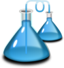

Navigace
rejstřík
další
|
Dokumentace pro CzechFlaskDoc 0.2.1
»
Flask a Jinja2
¶
Obsah:
Flask
Minimální aplikace
Debugovací mód
Směrování
Statické soubory
Renderování šablon
Přistupování k požadavkům
Sessions
Flashování zpráv
Jinja2
Proměnné
Komentáře
Escapování
Dědění šablon
Řídící struktury
Testování šablon
Vyhledávání
¶
Vyhledávací stránka

Obsah
Flask a Jinja2
Vyhledávání
Další téma
Flask
Tato stránka
Ukázat zdroj
Rychlé vyhledávání
Zadejte hledané termíny nebo jméno modulu, třídy či funkce.
Navigace
rejstřík
další
|
Dokumentace pro CzechFlaskDoc 0.2.1
»